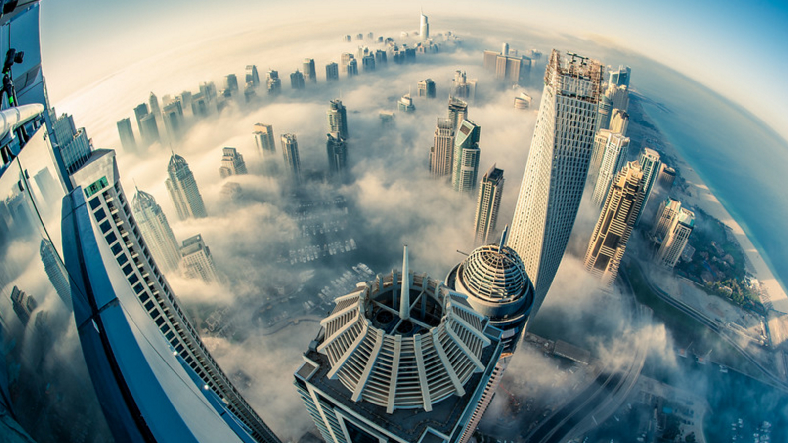
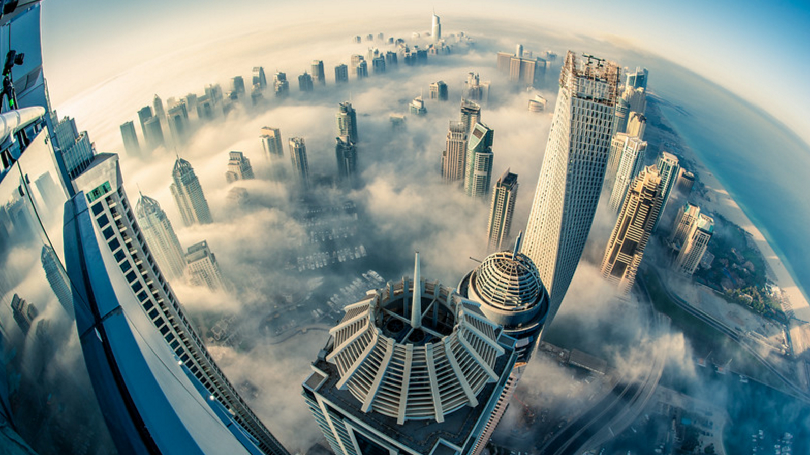

Fruits and vegetables contain important vitamins, minerals and plant chemicals. They also contain fibre. There are many varieties of fruit and vegetables available and many ways to prepare, cook and serve them. A diet high in fruit and vegetables can help protect you against cancer, diabetes and heart disease.

Photography is the art, application, and practice of creating durable images by recording light, either electronically by means of an image sensor, or chemically by means of a light-sensitive material such as photographic film.
Artistic photography is not photojournalism. Compositions are made carefully and purposefully, with every possible element planned out. In artistic photography, often one image is insufficient to communicate a broader concept. For this reason, artists use their body of work to tell their story.


Photography trends pop in and out of the spotlight often, but lately there’s a style of photography that’s been on everyone’s radar: lifestyle photography. So, what exactly is lifestyle photography? Not to be confused with photojournalism or portrait photography, lifestyle photography features individuals and families with the intention to capture real-life events or milestones in an artistic way. The best type of lifestyle photography is a planned version of candid (“plandid,” if you will). You want to capture the art of the everyday in someone’s life, but you still want it to be visually appealing. Here’s everything you need to know for a successful lifestyle photography shoot:
Event photography is the practice of photographing guests and occurrences at any Event or occasion where one may hire a photographer for. This is a coverage that is used around the world at occasions such as weddings, christenings, naming ceremonies, parties, birthdays, formals, dances, ceremonies, award ceremonies, funerals, meals and engagements.


Architectural photography is exactly what it sounds like; the photography of architectural structures. Great architectural photography needs to make the most of a structure's design and environmental setting. The best architectural photography is interesting, aesthetically appealing, skillful and accurate
 


Travel photography is a genre of photography that may involve the documentation of an area's landscape, people, cultures, customs, and history. The Photographic Society of America defines a travel photo as an image that expresses the feeling of a time and place, portrays a land, its people, or a culture in its natural state, and has no geographical limitations.